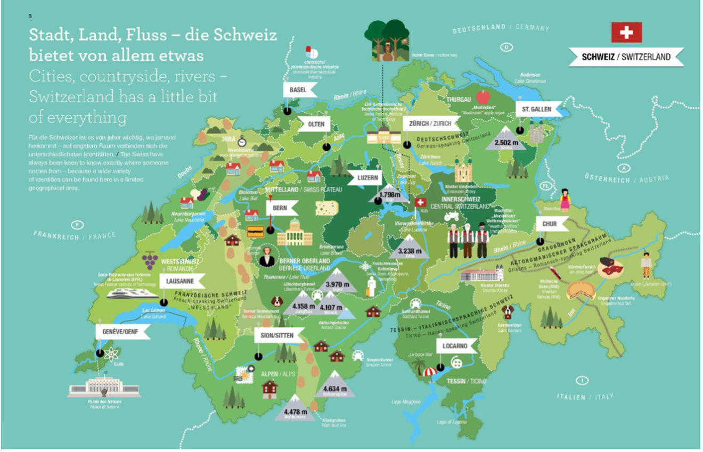
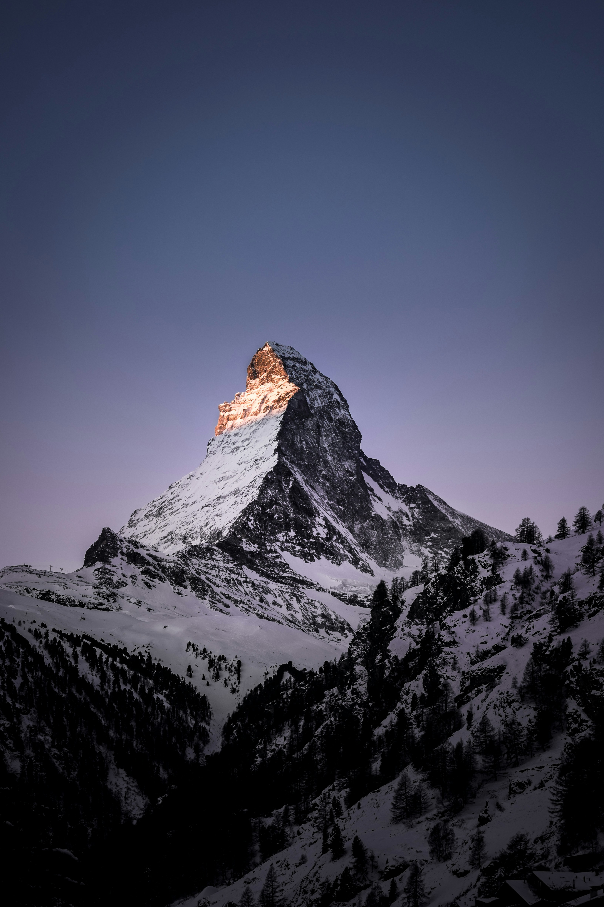

Map of Switzerland

Switzerland is a land of history, culture, and breathtaking landscapes. From medieval castles and charming old towns to UNESCO World Heritage sites and Alpine peaks, the country offers a rich variety of attractions. Visitors can explore centuries-old architecture, vibrant cultural hubs, and natural wonders like glaciers, lakes, and towering mountains—all within a single, compact country
Top 10 Sight To See In Switzerland

- Jungfraujoch: “Top of Europe” - Europe's highest train station with breathtaking Alpine views
- Matterhorn & Zermatt: Iconic mountain for hiking, skiing, and photography.
- Château de Chillon (Lac Léman): Stunning lakeside medieval castle.
- Old Town of Bern: UNESCO World Heritage site with cobblestone streets and medieval charm.
- Lac Léman & Jet d'Eau: Picturesque lake with Europe's tallest fountain.
- Lucerne & Chapel Bridge: Historic city with iconic wooden bridge and lakeside scenery.
- Basel's Art Museums: Europe's oldest public art collection and world-class galleries.
- Rhine Falls: Europe's largest waterfall near Schaffhausen.
- Interlaken & Lauterbrunnen Valley: Adventure hub surrounded by dramatic peaks and waterfalls.
- Lavaux Vineyards: UNESCO terraces with scenic lake and mountain views.
Fun Facts About Switzerland

- Ranks among the world's best for quality of life, innovation, safety and healthcare.
- Invented milk chocolate and eats more chocolate per person than any country on Earth.
- Home to over 700 types of cheese, the Swiss turn nearly half their milk into cheese.
- The Jungfraujoch is Europe's highest railway station and the Gotthard Base Tunnel is the world's longest rail tunnel.
- Neutral since the 1500s, Switzerland even supplies the Pope's famous Swiss Guard.
- The Swiss flag is one of the only square national flags in the world.
- There are 13 UNESCO World Heritage Sites, including Bern's Old Town and the Lavaux vineyards.
- Houses Europe's oldest wooden home (1287) and earliest public art collection (Basel).
- Zurich's St. Peter's Church boasts Europe's largest clock face.
- The Glacier Express partly runs using steam-powered rack railway technology.
- Lac Léman's Jet d'Eau shoots water 140 m into the sky.
- Chillon Castle inspired scenes in The Little Mermaid.
- The Swiss franc is also the currency of Liechtenstein and an Italian enclave.
- Switzerland holds 6% of Europe's fresh water, earning the nickname “The Water Tower of Europe.”
- The country hosted and won the first Eurovision in 1956.
- Basel's airport uniquely carries three airport codes (French, Swiss, German).
- Some tiny Swiss villages have more cows than people.
- Switzerland has 48 peaks over 4,000 m, more than any country in Europe.
- The Alps cover over half of Switzerland, but less than 20% of the Alps lie within its borders.
- Its neighbour Liechtenstein is one of only two double-landlocked countries in the world.